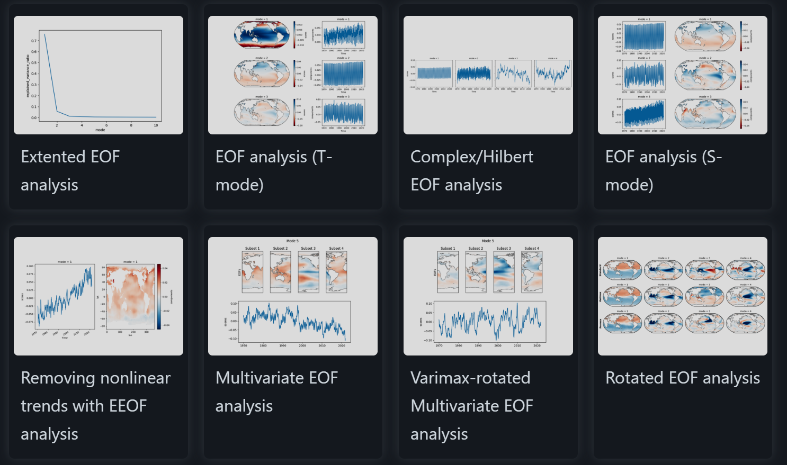
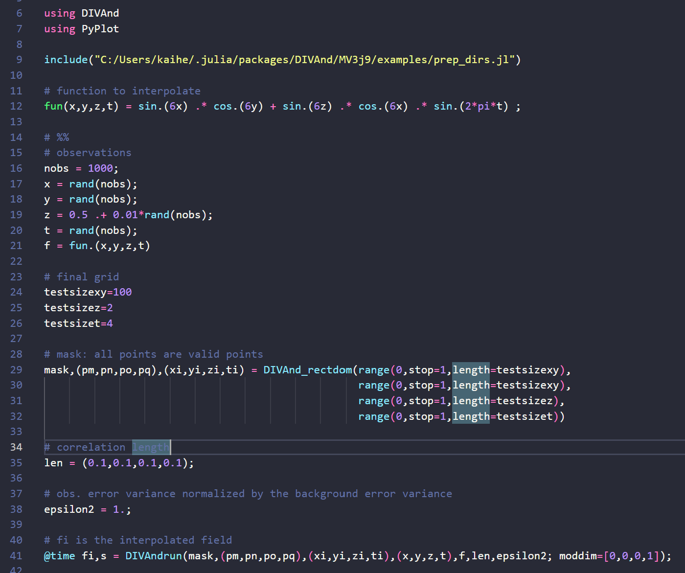

Frontiers in oceanography with ML and AI
Machine learning is a technology that helps identify patterns in data, aiding in the understanding and prediction of structures. By processing large amounts of data and building models, it provides insights that traditional methods could not achieve. In oceanography, where vast amounts of data exist, machine learning and AI are gaining attention as efficient methods for data analysis. These technologies offer new insights that help understand ocean circulation dynamics and ecosystem changes.
Ocean data is immense in scale and diverse in format. For instance, data obtained from satellites and large-scale numerical simulations can reach petabyte levels. Machine learning and AI are utilized to process and analyze this data. Machine learning improves the predictive accuracy of climate models and serves as a tool for monitoring ocean health. Deep learning is used to build models that predict extremely complex phenomena and biological behavior patterns that cannot be expressed by physical laws. Large language models like GPT are being used to assist in data analysis and integratively process diverse metadata.
Python package xeofs
Python and MATLAB are widely used as the main analysis tools. Python, with its open-source nature and abundant libraries, is supported by many researchers (it can handle most tasks one can imagine). MATLAB has the advantage of having existing packages that excel in highly specialized numerical calculations and analyses. These tools play an essential role in ocean data analysis.
An example code of Julia
Julia is a relatively new programming language that has been attracting attention in recent years. Julia is faster than Python or MATLAB while allowing concise code writing. Its advantages are particularly prominent in large-scale data analysis and real-time processing. Julia also supports parallel and distributed computing, making it ideal for efficiently processing large amounts of ocean data. Like Python, Julia is open-source, making it relatively easy to adopt. Due to these features, Julia is expected to play a significant role in future oceanographic research. For instance, excellent packages like Data Interpolating Variational Analysis are already written in Julia and made publicly available.